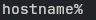
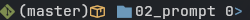
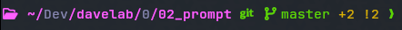
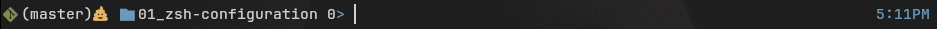

Configuring Your Prompt
Overview
The icon characters used in some of the example format-strings require you to install a specific font and configure your terminal emulator to use it. See Nerd Fonts for details.
I like the monospace Hack font, personally.
If you do not want to install a new font, you can either omit the lines with broken fonts, or you can replace them with ASCII characters or unicode glyphs supported by your current font.
If you are on Mac, you should be able to install these fonts via `homebrew`.
The default zsh prompt is very basic, usually just the system’s hostname followed by a ‘%’.

But you can configure the prompt to show whatever information you want, like the current working directory, the date and time, the name of the current git branch, and whether you have changes that have not been committed, etc.
The simple, hand-made zsh prompt we create in this chapter:

An example of a prompt generated by another program (p10k):

Things you might want in your prompt:
- The current working directory
- Git/VCS info (branch, action, staged/unstaged changes, etc.)
- The current date or time
- The status code of the previous command (
$?) - The number of background jobs (running programs sent to the background with
ctrl-z)
You can copy the contents of the example file and add it to your own .zshrc file, but these options are more subjective to personal preference, so you might want to customize things a little further.
Exploring the Example Configuration
We will use print -P to test out some different prompt strings, configure a git info section, and then source the included prompt-example.zsh and test out the difference.
Open this document in a window on one side of your screen and open your terminal emulator on the other half.
Start a fresh zsh session:
zsh -df
Take note of the default prompt, then import the example file and observe the difference:
source ./prompt-example.zsh
The PS1 Variable
The shell prompt is actually defined in an environment variable that you can set in your ~/.zshrc file.
To see your current prompt-string:
echo $PS1
%m%#
The % characters start special sequences that will be translated to specific values when the prompt is displayed. For example, %m will be replaced with the hostname of the host system.
The Basics
You can test a prompt-string with print -P
print -P "%m%# "
hostname%
Here are the options used in the prompt from the example file:
%1d-%dprints the current working directory. The1means only show the current directory name, and not all of it’s ancestors that make the full path.%?- The status code from the previous command in this session.
Try it Out
Run the following commands:
echo $HOSTNAME
print -P "%m%# "
Try adding %d to print the current working directory, and then try with %1d instead. Try other numbers instead of just 1, maybe even try some negative numbers…
Try running man zshmisc from the prompt and then searching (with /) for EXPANSION OF PROMPT SEQUENCES to see every code that is available. Add something to your prompt-string that we haven’t covered.
Colors and Escape Sequences
The traditional way of defining styles and colors in the terminal is to use ANSI escape codes.
So if you wanted to print “HELLO” in green, bold text, with underline, you’d write something like:
echo "\033[32;1;4mHELLO\033[0m"
This is pretty crazy, but not as bad as it looks:
\033[...mmeans anything between the[and themshould be interpreted as an escape sequence of integer values separated by ‘;’ characters.32means foreground color green.1means bold4means underline.- Then
\033[0m, at the end, means reset to the default style again.
But zsh gives us some easier options for working with colors and styles:
print -P '%B%U%F{green}Hello%f%u%b'
OK, that doesn’t look much better, but let’s go over it:
%B...%b- anything between%Band%bwill be bold.%U...%u- anything between%Uand%uwill be underlined.%F{green}...%f- anything between}and%fwill have a green foreground color.
Try it Out
Start a zsh session, but don’t import the example file just yet:
zsh -df
Try running man zshmisc from the prompt and then searching (with /) for "EXPANSION OF PROMPT SEQUENCES" to see every code that is available - and this time scroll down and look for the sub-section on ‘Visual Effects.’
Try modifying this format string %F{green}Hello%f to have two sections of text, with opposite foreground and background colors. So maybe “HELLO” in green foreground and black background, and “WORLD” in black foreground and green background. Use print -P to test it out.
HELLO WORLD
Answer
```zsh print -P "%F{green}%K{black}Hello%k%f %F{black}%K{green}World%k%f" ```VCS (Git) Information
The example file includes a section that configures zsh to read information about the current git repository, and we use zstyle ton configure how it will be displayed in the prompt.
I won’t explain the zstyle module, but you can run man zshmodules and search for zstyle for the official documentation, and there are a lot of good tutorials available on the internet.
I will go over some of the things that I think you may want to customize, using all of the things we’ve covered so far:
- The normal
gitstatus format.
zstyle ':vcs_info:git:*' formats '%F{green} %f(%b)%F{yellow}%u%c%f'
This format string will show:
- A green ‘git’ icon (you need a specific font to see it properly).
- The name of the current branch, in parentheses.
- In yellow, two characters that will indicate if you have pending staged or unstaged changes in your working tree. If you don’t have any pending changes, these characters will not show up.
- How to display the ‘staged’/’unstaged’ indicators:
If you want to use the %u and %c characters to indicate that you have pending changes, then you may want to customize the content they show. By default, they show a U and a C, but I’ve changed them to use icons (which you probably cannot see here, without the appropriate font):
zstyle ':vcs_info:git:*' stagedstr " "
zstyle ':vcs_info:git:*' unstagedstr " "
You may want to use different icons, or entirely different format strings of some type. You can remove these two lines if you prefer the default U and C characters, or you can delete these lines and remove the %c and %u from the git status format string.
- “Actions” format:
When you are performing an ‘action’, like resolving conflicts while trying to apply a merge or rebase, you can use this to show information about that operation in your prompt.
zstyle ':vcs_info:git:*' actionformats '%F{green} %f(%F{yellow}%b%f|%F{red}%a%f)'
This is the same as the normal git prompt we defined, but it says the name of the ‘action’ (“merge”, “rebase”, etc.) inside the parentheses, where we have the branch name.
Try it Out
Start a zsh session and source the example file:
zsh -df
source ./prompt-example.zsh
Try creating a new branch with git checkout -b test-branch and observe the changes to the prompt.
Now try making a change to one of the files in this repository, which should make an ‘unstaged’ change.
Now run git add FILENAME to stage that change (replace FILENAME with the name of the file that you modified).
Now you can go back to the master branch with git checkout master.
If you want, delete that test branch with git branch -D test-branch.
The RPROMPT Variable
You can also define a prompt-string to display on the right-side of the command-line by setting the RPROMPT variable:
export RPROMPT='%F{blue}%t%f'
This would show the current time, in blue text, on the far right side of your command line.

Conditional Formats
There are a few conditional formatting options you can apply to your prompt.
Run man zshmisc from the prompt and then searching (with /) for CONDITIONAL SUBSTRINGS IN PROMPT.
There are only a fixed few variables/conditions, and the syntax is a little strange.
%(CONDITION,TRUE,FALSE)
The escape sequence starts with %(, followed by:
- Optionally, an integer value, that can be compared to the variable (
0in the example below). - The one-character ‘conditional variable’ that evaluates when the prompt is rendered (like
?). - Followed by a delimiter (for example:
,). - Then the ‘true’ format string value.
- Then the delimiter again (
,). - Then the ‘false’ format string value.
- Then
)to close the sequence.
print -P '%0(?,0,%F{red}%?%f)'
This will print the status code of the previous command, in red, if the code was non-zero. If the code was zero, it prints a zero in the default color.
%0(- We’re evaluating condition that means ‘if status code == N’. This specifies N = 0 for our comparison.?- The condition is based on the status code of the last command (equal to N). A value of zero means the previous command exited without error.,- The delimiter we chose to use is a,(comma). You can use anything, as long as you don’t use that same value in your format string.0- The ‘true’ prompt-string. Just prints a0in the default colors.,The same delimiter character again.%F{red}%?%f- The ‘false’ condition (NOT equal to 0), which prints the response code in red.
Here is the final prompt format, including conditional formatting for background jobs and the status code of the previous command.
export PS1='${vcs_info_msg_0_} %F{blue} %f%1d%1(j. %F{yellow}%j%f.)%F{blue}>%f '
export RPROMPT='<%0(?..%F{red}%?%f)%F{blue}%t%f'
If these are not sufficient, you can always call a function or another program to implement conditional formatting.
Try it Out
Type an invalid command, like ls for a directory that doesn’t exist:
ls xyz123
You should see a red status code in your prompt string.
Now try suspending a job to the background with ctrl+z:
less ./README.md
Press ctrl+z to suspend the process to the background. You should see a yellow 1 next to your prompt now.
Type fg to bring the job back to the foreground, then hit q to exit.
Prompt Configuration Applications
There are also programs and utilities that you can use to generate a more complicated, themed prompt. There are even programs that are designed to be run inside the prompt to dynamically change the prompt-string by using a language like Python.
Here are a couple that I know of:
- powerlevel10k
- This is old and will no longer be updated. It still works though.
- This is a program that will generate a really complicated prompt-string with colors, and icons, and cool stuff.
- starship
- This is the suggested replacement for
p10k. - Advertised as being ‘blazing-fast, and infinitely customizable’
- This is the suggested replacement for
- powerline
- A python program that runs in your prompt string.
- One of the original fancy-prompt tools.
- Has support for shell prompts and
vimstatus bar, to give consistent style and theme. - Downside: it’s pretty slow and will often crash when your system python version changes.
If you want to go this way, I’d recommend starship.
The git prompts from starship and p10k can show a lot more information about the state of the repository than the simple vcs_info can, like if you’re branch is ahead of the origin, or if you have untracked files, etc. On the other hand, the operations required to get that extra info can make your prompt feel very sluggish when you are working on a large repository.
I would stay away from powerline or anything else that runs “in your prompt string.” When powerline crashes, it means you have no useful prompt, and sometimes you can’t even interact with your shell!
But you already have a lean, fast, and personally customized prompt so you don’t really need to use these.